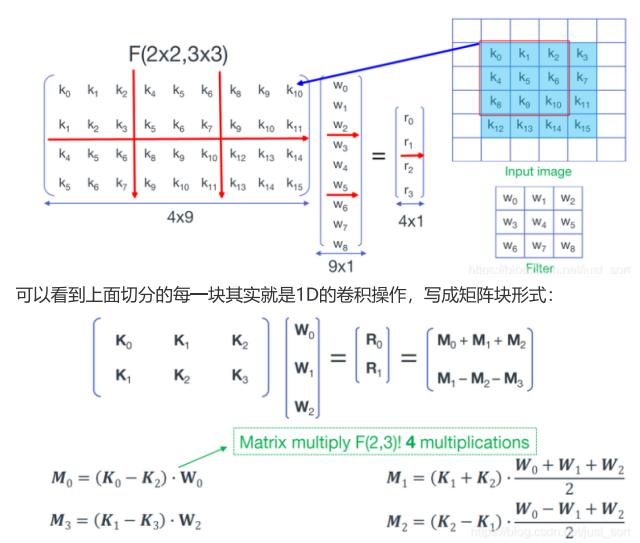

简介
Winograd算法起源于1980年，作者Shmuel Winograd 在文章《On multiplication of polynomials modulo a polynomial》中提出的减少FIR滤波器计算量的一个算法。他指出，对于输出个数为m，参数个数为r的FIR滤波器，不需要m×r次乘法计算，而只需要u(F(m,r))=m+r−1次乘法计算即可。
后来，有人发现此算法可以用来优化加速CNN网络的卷积计算《Fast Algorithms for Convolutional Neural Networks》，从此Winograd算法被广泛应用于各推理框架中。
原理
1D Winograd算法
1维卷积 F(2,3) 为例，输入信号d=[d0,d1,d2,d3]T，卷积核g=[g0,g1,g2]T，则卷积可以写成如下矩阵乘法形式：
F(2,3)=[d0d1d1d2d2d3]⎣⎡g0g1g2⎦⎤=[r0r1]
如果这个计算过程使用普通的矩阵乘法，一共需要 6 次乘法 和 4次加法。
但是，我们仔细观察一下，卷积运算中输入信号转换得到的矩阵不是任意矩阵，其有规律的分布着大量的重复元素，例如d1和d2。Winograd做了如下变换：
F(2,3)=[d0d1d1d2d2d3]⎣⎡g0g1g2⎦⎤=[m1+m2+m3m2−m3−m4]
其中，
m1=(d0−d2)g0m2=(d1+d2)2g0+g1+g2m4=(d1−d3)g2m3=(d2−d1)2g0−g1+g2
在CNN的推理阶段，卷积核上的元素是固定的，所以上式中和g相关的式子可以提前在模型初始化阶段算好，整个推理阶段只用计算一次，因此可以忽略。所以这里一共需要 4次乘法 和 8次加法。
上面其实就是1D的Winograd算法，我们将上面的计算过程写成矩阵的形式如下：
Y=AT[(Gg)⊙(BTd)]
其中，
- ⊙表示element-wise multiplication（Hadamard product），即对应位置相乘操作；
- g表示卷积核；
- d表示输入特征图；
- G表示卷积核变换矩阵，尺寸为(u+k−1)×k；
- BT表示输入变换矩阵，尺寸为(u+k−1)×(u+k−1)；
- AT表示输出变换矩阵，尺寸为(u+k−1)×u；
- u表示输出尺寸，k表示卷积核尺寸，su=(u+k−1)表示输入尺寸。
各矩阵具体值如下：
BT=⎣⎡100001−11−1110000−1⎦⎤G=⎣⎡121210021−210021211⎦⎤AT=[10111−10−1]g=[g0g1g2]Td=[d0d1d2d3]T
G, BT,AT三个变换矩阵的推导原理及过程可以参考：详解Winograd变换矩阵生成原理 。当然，github有个工具wincnn可以直接帮我们计算。
2D Winograd算法
将F(2,3)扩展到F(2×2,3×3)，形象的展示如下图：

上图中最后得到M0...M3的操作为4次矩阵加法和4次矩阵乘法，由M0...M3得到[R0,R1]T为4次矩阵加法，同样W矩阵的转换的计算量忽略不计。
- K0...3之间的4次矩阵加法， 每次实际为4次加法（注意不要被上面扩展后的K矩阵划分的小方块中6个元素所迷惑，其中有重复的元素），共4×4=16次加法；
- 4次矩阵乘法可以转换为4次 1D Winograd 来计算，每次 1D Winograd 计算中有4次乘法，8次加法，共4×4=16次乘法，4×8=32次加法；
- 最后M0...M3之间的4次矩阵加法，由于M矩阵的尺寸为2×1，所以共4×2=8次加法；
综上，F(2×2,3×3)的Winograd算法共 16次乘法和56次加法，如果使用常规卷积运算，则需要 36次乘法和32次加法
上面的计算过程写成矩阵的形式如下
Y=AT[[GgGT]⊙[BTdB]]A
1D 到 2D的 公式推导
约定：大写字母或小写字母加上箭头均代表矩阵或向量，K0与d0均表示输入矩阵的第一行，W0与k0均表示卷积核的第一行
这里沿用2D Winograd推导中的字母表示，最后会转为1D Winograd推导中的字母表示
首先对上述公式进行重排，输出为2×2矩阵：
[R0,R1]=[M0+M1+M2,M1−M2−M3]=[M0,M1,M2,M3]⎣⎡111001−1−1⎦⎤=[M0,M1,M2,M3]A
结合上面计算代入Mn得下式：
[R0,R1]=[AT[(GW0)⊙(BT(K0−K2))],AT[(G2W0+W1+W2)⊙(BT(K1+K2))],AT[(G2W0−W1+W2)⊙(BT(K2−K1))],AT[(GW2)⊙(BT(K1−K3))]]A=AT[[(GW0)⊙(BT(K0−K2))],[(G2W0+W1+W2)⊙(BT(K1+K2))],[(G2W0−W1+W2)⊙(BT(K2−K1))],[(GW2)⊙(BT(K1−K3))]]A
由于hadamard product（⊙）和concat（,）操作可以交换而不影响结果，因此：
[R0,R1]=AT[(G[W0,2W0+W1+W2,2W0−W1+W2,W2])⊙(BT[K0−K2,K1+K2,K2−K1,K1−K3])]A=AT[(G[W0,W1,W2]⎣⎡10021212121−2121001⎦⎤)⊙(BT[K0,K1,K2,K3]⎣⎡10−1001100−110010−1⎦⎤)]A=AT[(G[k0,k1,k2]GT)⊙(BT[d0,d1,d2,d3]B)]A=AT[(GKGT)⊙(BTDB)]A
工程应用角度看
Winograd算法可以分为4个步骤：
-
- 初始化期间完成卷积核的变换
weightTransform，即：GKGT
-
- 运行期间完成输入数据的变换
sourceTransform，即：BTDB
-
- 运行期间完成输入数据与权重的
MatMul，即：(GKGT)⊙(BTDB)
-
- 运行期间完成输出数据的变换
dstTransform，即：AT[(GKGT)⊙(BTDB)]A
关于计算量的讨论
关于1D Winograd， 网上最常见的解释是：相比于普通的矩阵乘法，使用Winograd算法之后乘法次数减少2次，加法次数增多4次，实际使用中，乘法指令周期比加法要长，通俗来讲Winograd就是减少乘法操作，用更快的加法操作来达到加速目的。
但是这样的解释是有局限性的：
其他分块情况
- 首先，上文中列举的是F(2,3)的情况，查看变换矩阵得到，该情况下的输入、输出变换矩阵（A和B）系数非0即1（-1），此种情况下确实不需要乘法。
- 但对于F(4,3)，或者F(6,3)等block更大情况，变换矩阵中存在很多非0和1的系数，单独的MatMul乘法计算是减少了，但是引入了额外的输入、输出变换中需要的乘法，会存在乘法次数变多的情况，这个在原始论文中也有提及。
CPU架构
- 其次，关于浮点乘法比浮点加法指令周期长的问题，这个在旧的CPU架构下会存在，但是目前使用的CPU架构下，浮点的乘法和加法指令周期是一样的。
比如X86端 Intel CPU，从第5代Broadwell架构开始，两者的延迟就没有差别了，在intel core i7 9700 CPU（Coffee lake 第9代）上测试SSE指令集的浮点乘法和加法，经过实测，两者性能确实没有差异。
- SSE指令集SIMD加法和SIMD乘法的对比可以点击跳转手册查看；
- 关于SSE指令集中所列出的两个属性
latency（延迟）和throughput（CPI）吞吐量的具体含义可以看这里，我的理解就是：
- latency就是完成一条指令所需要的时间，即生成结果的指令与使用该结果的指令之间的周期数，比如Broadwell架构下
_mm_add_ps浮点加法的latency为3，则表示（在不发生RAW冒险（数据冒险的一种，写后读冒险）的情况下）最快也要3个周期，其他指令才能获得浮点加法的运算结果。
- throughput吞吐量，又称CPI（cycle per instruction，每指令周期数），是发射一条指令所需要的时钟周期数，比如Broadwell架构下
_mm_mul_ps浮点乘法的throughput为0.5，则表示一个时钟周期内可以发射2条浮点乘法指令。
- 比喻一下：延迟=水管中水的流速，吞吐量=水管的粗细
考虑多通道输入输出
实际要考虑卷积中的输入通道数IC，输出通道数OC。因为输入变换只与IC有关，输出变换只与OC有关。而普通滑窗卷积计算与IC，OC均相关。
完整的计算量对比：
-
普通卷积：
OriginalCost=OW∗OH∗OC(2∗IC∗kernelX∗kernelY−1)
-
Winograd卷积：
SrcTransformCost=2∗su∗M∗ICMatMulCost=su∗su∗IC∗OCDstTransformCost=(su+u)∗N∗OCWinogradCost=(SrcTransformCost+MatMulCost+DstTransformCost)∗(OW/u)∗(OH/u)
其中：
- u∈[2,8]表示单个块的输出尺寸
Unit；
- su=u+kernel−1表示单个块的输入尺寸
Source Unit；
- M∈(0,su∗su)表示输入变换中一行元素的乘加次数；
- N∈(0,su∗su)表示输出变换中一行元素的乘加次数。
考虑到转换矩阵的稀疏性（即存在0和1（-1）），因此上面的M和N值与 Unit的选取相关且为定值。至于Uint如何确定，放到下一篇来讲。
根据对不同u，IC，OC遍历实测，就乘加次数而言，仅当IC或OC≤2的个别情况下（实际应用中，通道<=2的卷积情况非常少），Winograd在计算次数上是增加的，具体可以通过下面的代码简单验证。
void UnitTest(const int unit, const int &st, const int &dt, const int &ic, const int &oc, std::ofstream &fout, int kernel = 3) {
float original_cost = (float)(2 * ic * kernel * kernel - 1) * oc;
float src_transform_cost = 2 * (unit + kernel - 1) * st * ic;
float matmul_cost = (unit + kernel - 1) * (unit + kernel - 1) * ic * oc;
float dst_transform_cost = (2 * unit + kernel - 1) * dt * oc;
float winograd_cost = (src_transform_cost + matmul_cost + dst_transform_cost) / (unit * unit);
float rate = original_cost / winograd_cost;
if (rate < 1) {
printf("uint: %d, ic: %d, oc: %d, rate: %f\n", unit, ic, oc, rate);
}
fout << "unit:" << unit << ", ic:" << ic << ", oc:" << oc << ", rate:" << rate << std::endl;
}
void WinogradUnitTest3x3() {
std::vector<int> u = { 2, 4, 6 };
std::vector<int> st = { 0 + 4, 10 + 16, 30 + 36 };
std::vector<int> dt = { 0 + 4, 2 + 11, 10 + 32 };
std::ofstream fout("unit_info.txt");
for (int k = 0; k < u.size(); ++k) {
for (int i = 1; i <= 64; ++i) {
for (int j = 1; j <= 64; ++j) {
UnitTest(u[k], st[k], dt[k], i, j, fout);
}
}
}
fout.close();
}
|
致谢
文章主体框架参考自东哥的MNN源码解读的内部分享，加上了自己的一些看法。有幸被看到的话，希望能给点个赞~~
 wechat
wechat alipay
alipay


![AI算法基础 [4]：Winograd算法原理](/images/%E6%88%98%E5%8F%8CCG_%E6%8C%A3%E6%89%8E.png)
![AI数据集 [1]：COCO数据集](/images/%E6%88%98%E5%8F%8CCG_%E9%80%83%E7%A6%BB.png)